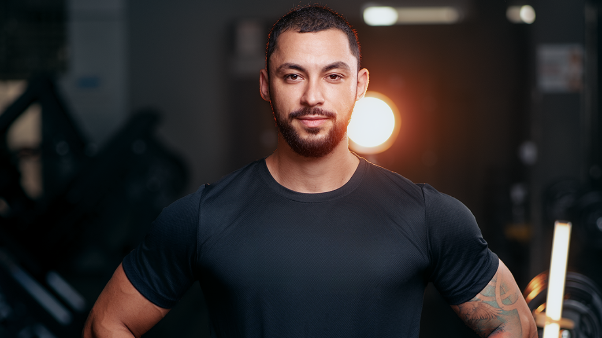
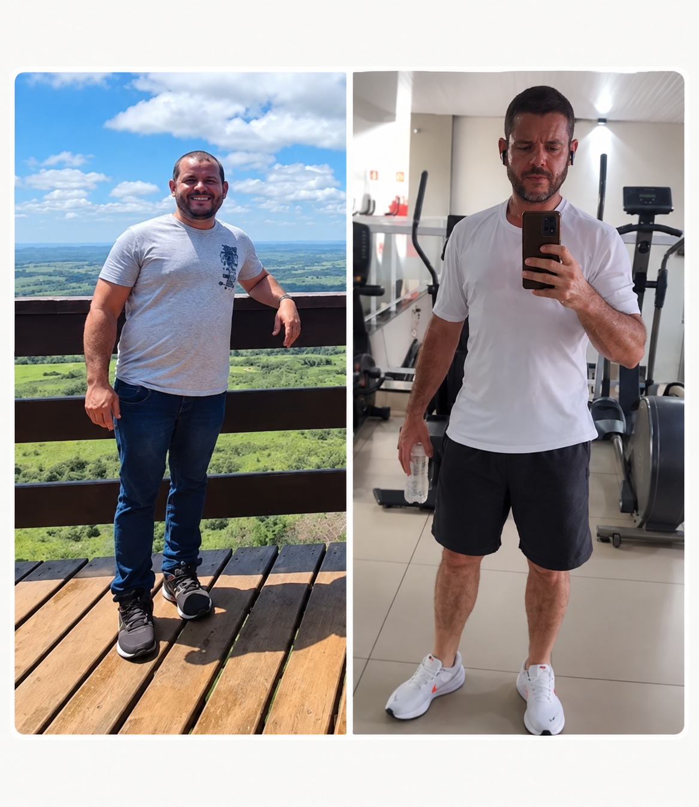

35 kg a menos ao longo do processo.
Ajudo pessoas como você a conquistar resultados reais, através de um planejamento pensado na sua rotina.

35 kg a menos ao longo do processo.

Evolução de uma aluna.

Resultado de acompanhamento.

Evolução de um aluno.
Os resultados são individuais e variam conforme contexto, adesão, tempo e características de cada pessoa.
Responda três perguntas rápidas e conheça as opções de atendimento.
Descubra como posso te ajudar